{\rtf1\ansi\ansicpg1252\cocoartf2639 \cocoatextscaling0\cocoaplatform0{\fonttbl\f0\fmodern\fcharset0 Courier;\f1\fnil\fcharset0 Menlo-Regular;} {\colortbl;\red255\green255\blue255;\red255\green255\blue255;\red0\green0\blue0;\red12\green12\blue12; } {*\expandedcolortbl;;\cssrgb\c100000\c100000\c100000;\cssrgb\c0\c0\c0;\cssrgb\c5098\c5098\c5098; } \paperw11900\paperh16840\margl1440\margr1440\vieww16640\viewh14020\viewkind0 \deftab720 \pard\pardeftab720\partightenfactor0
\f0\fs26 \cf0 \expnd0\expndtw0\kerning0
S41\#
\
Avtor: Anita Mulali\uc0\u263 \
Datum izdelave: 2024-05-22\
Koda seminarja: S41
—\
Vhodni podatek\#
Povezava do datoteke z vhodnim podatkom: S41
—\
Rezultati analiz\#
\
Identifikacija\#
Identifikacija je bila narejena z uporabo NCBI BLAST, blastx (baza podatkov: metagenomski proteini). Dobila sem protein s 100% identi\uc0\u269 nostjo:
\pard\pardeftab720\partightenfactor0
\f1 \cf0 \cb2 >KUG17428.1 atp-dependent protease la [hydrocarbon metagenome]
MIWKEKSMETKHQIYSQEQPIIAVRTEKLTSEDESNELLGDIKFEDTSSITVPENLIDQVIGQDEAVEVI
KKAASQRRHVMLIGSPGTGKSMLGKAMSELLPVEDLQDVLVYANPEDNNTPRVRVVPAGRGKQIVDAQKL
EARKKVQTRNMFLMIIVMALIVYAYYMGQLLFGIIAAALLFISLRYMLPKEDAMVPKLLVDNNGKKKAPY
VDATGAHAGALLGDVRHDPFQSGGLETPSHERVECGSIHKAHKGVLFIDEVNTLRPESQQSLLTALQEGV
YQITGQSERSSGALVRTEPVPCSFIMIAAGNLDAVQGMHPALRSRIKGYGYEVYMRDTMEDTLENRNKLI
RFVAQEIVRDGKIPHFTQDAVAEIMREAKRRSGRKGHLTLMLRDLGGLIRVSGDVARAESSHLTEVNHVM
QAKKMARSVEQQLADRYMERRKDYSMFHSSGDEIGRVNGLAVMGDSGIVLPIMAEITPAQSKEEGKIIAT
GKLQEIAKEAVTNVSVLIKKFLGEDITKKDVHIQFIGTYEGVEGDSASISIATAVISALEGVPVKQTVAM
TGSLSVRGDVMPVGGVTQKIEAAAQAGIKTVLIPKSNMGDVLIDDSMKNSIEIIPVSNISEVFEFAMGSQ
RTRLIEKLKKFATEKKIGINIPETIPTPIRSI
\pard\pardeftab720\partightenfactor0
\f0 \cf0 \cb1 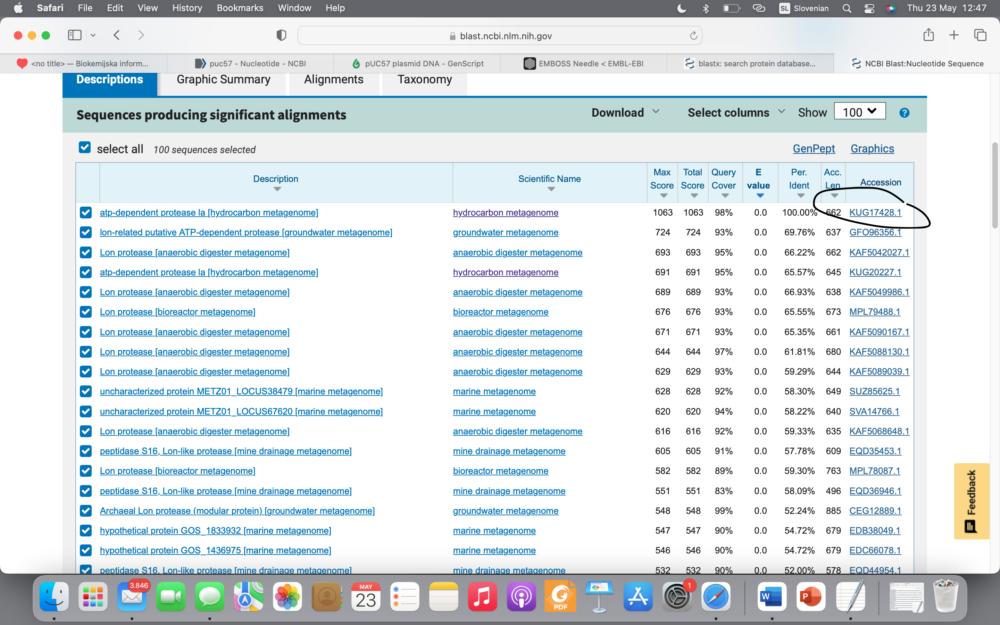
\f1 \cb2
Protein, ki ga dobim z blastp (baza podatkov: swissprot) s 66% identi\uc0\u269 nostjo:
\
sp|O29883.1|LONB_ARCFU RecName: Full=Archaeal Lon protease; AltName: Full=ATP-dependent protease La homolog
MNEEVREILGGLDFESTKDVAVPERLIDQVIGQDHAVEAIKKAAVQKRHVMLIGSPGTGKSMLAKAMAEL
LPKEELEDILVYPNPQDPNQPKIRLVPAGKGREIVEAYKEEAMKKAQARNFLIFTLVFLVIGYTVLTNPG
NLIWGIIAAVLILMMSRYFIPREDRNVPKLLVDNSDKVTAPFEDATGAHAGALFGDVRHDPFQSGGLETP
AHERVEAGAIHRAHKGVLYIDEINTLTIESQQKLLTALQDKKFPITGQSERSSGAMVRTEPVPCDFILVA
AGNLDALMGMHPALRSRIEGYGYEVYMNDTMPDTPENRQKLVRFVAQEVVKDGKIPHFDKYAVAEIIKEA
RRRAGRRNHLTLRLRELGGLVRTAGDIAKSEGSDIVRLEHVLKAKKIAKTIEEQLADKYIERRKDYKLFI
TEGYEVGRVNGLAVIGESAGIVLPIIAEVTPSMSKSEGRVIATGRLQEIAREAVMNVSAIIKKYTGRDIS
NMDVHIQFVGTYEGVEGDSASISIATAVISAIEGIPVDQSVAMTGSLSVKGEVLPVGGVTQKIEAAIQAG
LKKVIIPKDNIDDVLLDAEHEGKIEVIPVSRINEVLEHVLEDGKKKNRLMSKFKELELAAV
\
\f0 \cb1 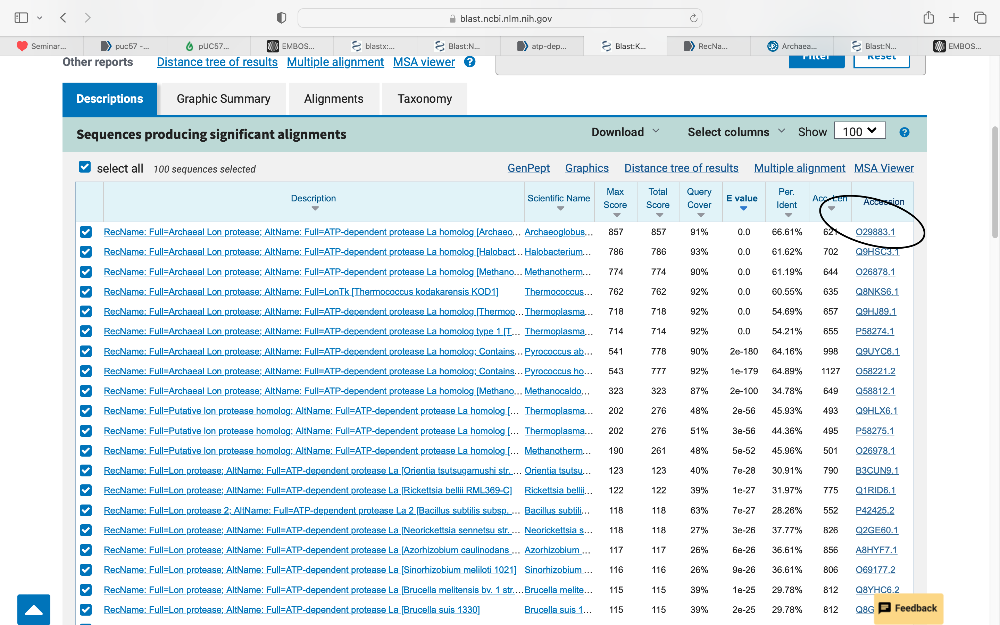
Podatki anotiranega proteina z identifikacijsko kodo ‘93O29833’94 v UniProt-u:
\pard\pardeftab720\partightenfactor0
\f1 \cf0 \cb2
\pard\pardeftab720\partightenfactor0
\f0 \cf0 \cb1 *Protein: arhealna lon proteaza
Organizem: Archaeoglobus fulgidus (ekstremofilna arheja)
LOKACIJA: Celi\uc0\u269 na membrana (transmembranski protein)
VELIKOST IDENTIFICIRANEGA PROTEINA: 662 AK
DOMENSKA ZGRADBA: \
citoplazemska domena: 1-117 aa\
transmembranska domena: 118-136\
zunajceli\uc0\u269 na domena: 137-141\
transmembranska domena: 142-160\
citoplazmeska domena: 161-621
(* proteolitska domena : 432-602 aa)
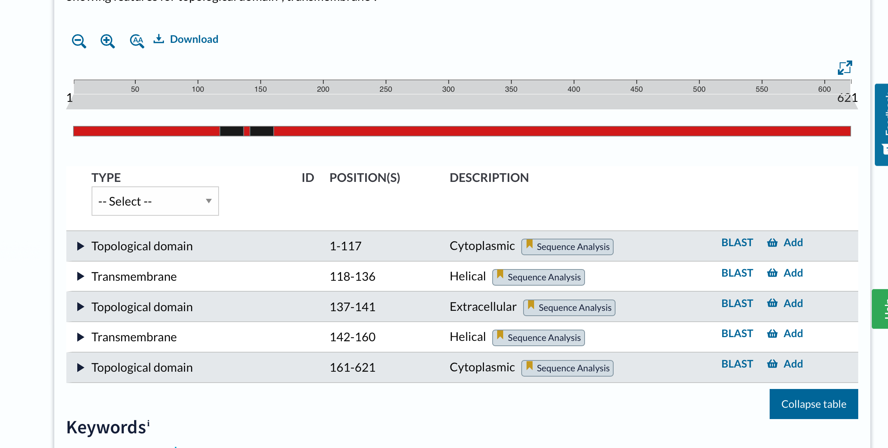
POST-TRANSLACIJSKE MODIFIKACIJE: ni podatka
AKTIVNO MESTO: 509 aa-S; 552 aa-K
KOFAKTOR: ni anotiran
FUNKCIJA PROTEINA: ATP-odvisna serinska proteaza, ki posreduje pri selektivni razgradnji mutantnih in abnormalnih proteinih ter dolo\uc0\u269 enih kratko’9eive\u269 ih regulatornih proteinih. Postopno razgrajuje polipeptide.
\
Sorodni proteini\#
\pard\pardeftab720\partightenfactor0
\f1 \cf0 \cb2 \
\f0 Pri izdelavi filogenetskega drevesa je bilo najprej potrebno zaporedje proteina vstaviti v blastp (PSI-BLAST) ter vzeti nekaj sorodnih proteinov (12), jih prenesti in vstaviti v Clustal Omega ter dobljeno datoteko vnesti v phylo.io.
\f1
\pard\pardeftab720\partightenfactor0
\f0 \cf0 \cb1 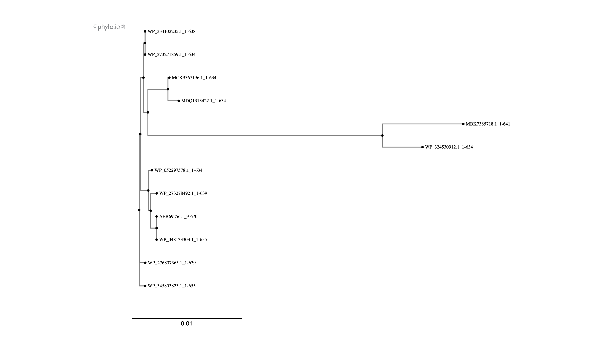
\pard\pardeftab720\partightenfactor0
\f1 \cf0 \cb2
\pard\pardeftab720\partightenfactor0
\f0 \cf0 \cb1 ### Ohranjene regije
Pri ugotavljanju ohranjenih regij proteina je bilo potrebno uporabiti blastp, Cobalt ter Weblogo.
Pri\uc0\u269 akujemo, da bo pri anotiranem proteinu ohranjen serin na 509. mestu, saj je to serinska proteaza; rezultati se tudi skladajo s pri\u269 akovanji. Najmanj pa so ohranjena mesta na za\u269 etku ter koncu aminokislinksega zaporedja.
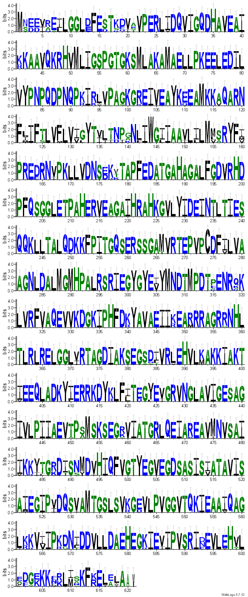
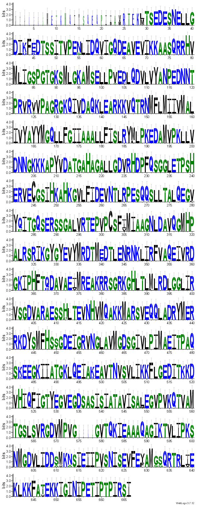
\
Podobni evkariontski proteini\#
Identificiranemu proteinu je v PDB zbirki najbolj podoben protein s 27% identiteto; identifikacijska koda v PDB ‘937sxo’94. V zbirki ‘93nr’94 pa je najbolj podoben protein s 30% identiteto.
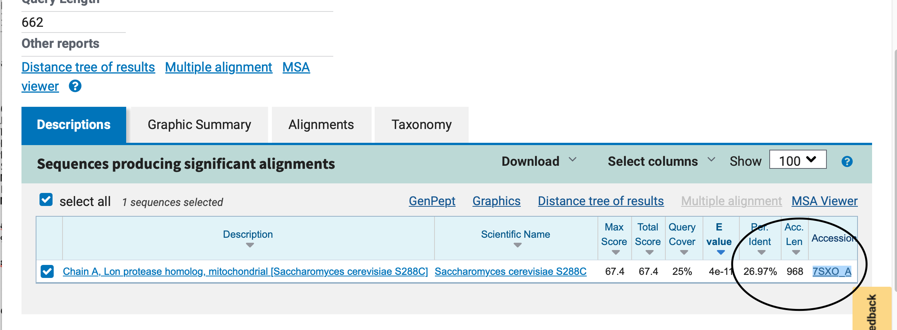
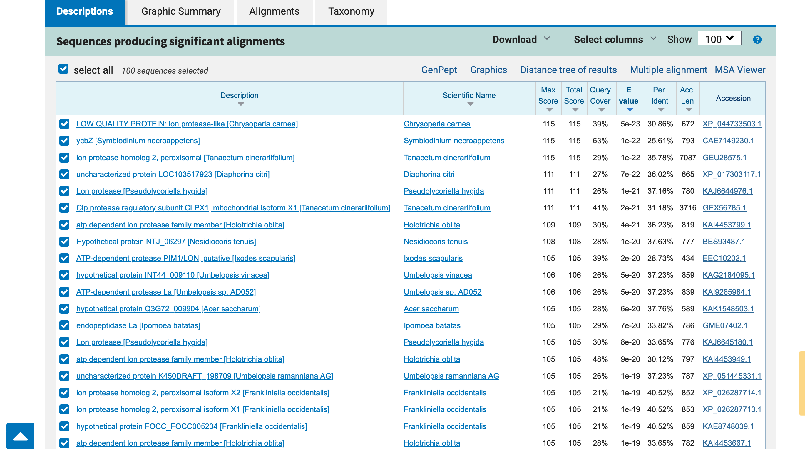
\
Funkcijska povezanost s proteini\#
Za analizo funkcijske povezanosti z drugimi proteini sem uporabila program STRING, v katerega sem vnesla aminokislinsko zaporedje identificiranega proteina. Analiza poka’9ee, da so razli\uc0\u269 no izra’9eeni geni vklju\u269 eni v znane predvidene interakcije protein-protein. Vozli’9a\u269 a predstavljajo gene, razli\u269 ne barvne \u269 rte pa napovedi povezav. Vne’9aen protein je ozna\u269 en z vozli’9a\u269 em rde\u269 e barve.
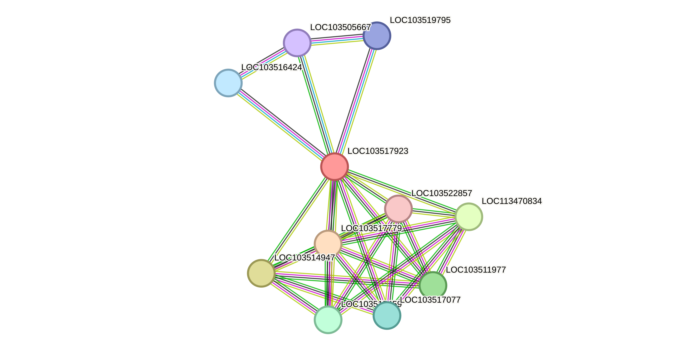
\
Strukturna karakterizacija\#
Do modela strukture identificiranega proteina pridemo s pomo\uc0\u269 jo AlphaFold. Program napove 3D strukturo proteina glede na njegovo aminokislinsko zaporedje. pLDDT \cf4 je merilo zanesljivosti napovedane tridimenzionalne strukture proteinov na ravni posameznih aminokislin.\cf0 Temno modri deli imajo najvi’9aji pLDDT, za razliko od oran’9enih, ki imajo najmanj’9ao zanesljivost napovedane strukture.
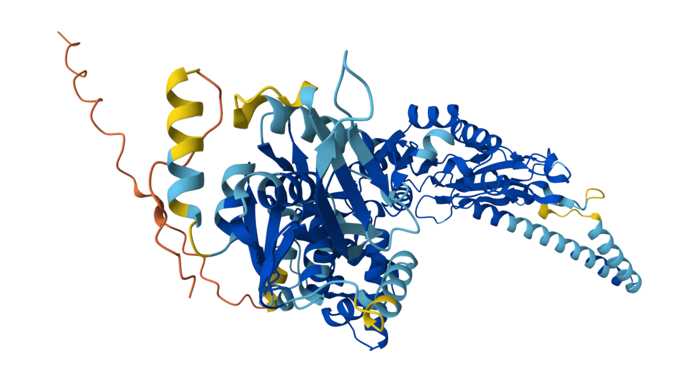
\
Superpozicija\#
Superpozicijo pripravim s pomo\uc0\u269 jo izrisa modela v Swiss-Model. Model odprem v programu Chimera in poravnam verigi modelov podobnih proteinov (za model podobnega proteina uporabim strukturo s PDB kodo ‘937SXO’94). Moj protein je obarvan vijoli\u269 no, veriga podobnega proteina pa je obarvana modro.
Rmsd pri ujemanju \cf4 najbolj reprezentativnih delov za primerjavo dveh struktur je 0,994, kar ka’9ee na dobro ujemanje med temi deli struktur.
\cf0
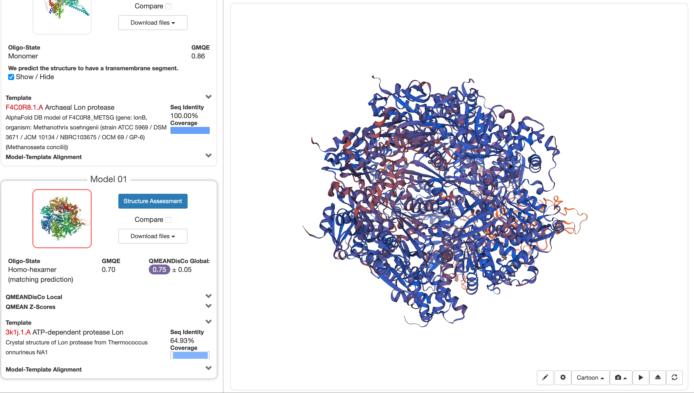


}